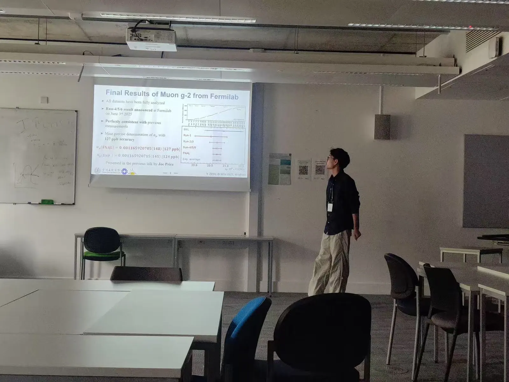
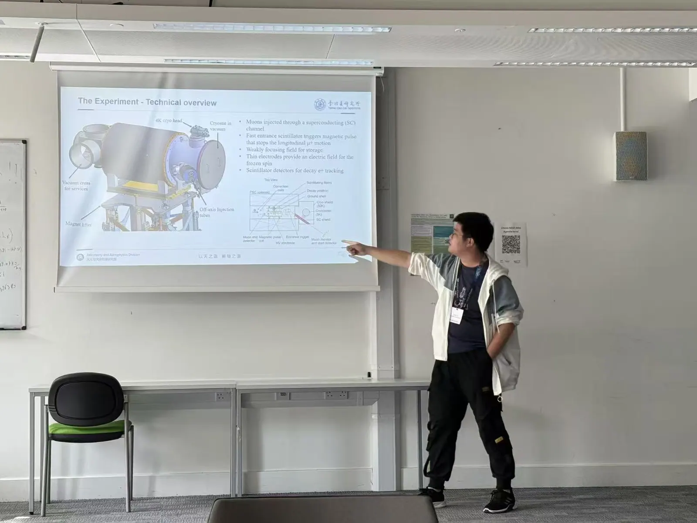

From June 9 to 13, 2025, the 30th International Workshop on Weak Interactions and Neutrinos (WIN 2025) was held at the University of Sussex, UK. One of the prominent conferences in particle physics, WIN brings together researchers from around the world to discuss recent progress and frontier challenges in weak interactions, neutrino physics, and related topics.
Ph.D. students Tianqi Hu and Yonghao Zeng represented our group at the conference, each giving an oral presentation on their research.

Yonghao’s talk, titled “Measurement of the Muon Anomalous Precession Frequency in the Fermilab Muon g-2 Experiment”, presented the latest results from the Fermilab Muon g-2 Experiment on behalf of the collaboration, attracting considerable interest and constructive feedback from experts in the field.
“This was my first time attending the WIN conference and giving an oral talk on such a large stage. I had the opportunity to present my research to an international audience and engage in in-depth academic discussions, and I received valuable feedback that will help refine my future work. I also learned a lot about other fields, such as neutrino oscillations and dark matter searches. It was a fascinating experience!” – Yonghao Zeng

During the event, Tianqi Hu delivered an oral presentation titled “Searching for the Muon’s Electric Dipole Moment by a Compact Frozen-Spin Trap”, sharing recent progress on our muon EDM experiment, including the principle of the experiment, the design of our trigger detector prototype, beam test results, and a performance evaluation of the system.
“The workshop brought together leading researchers in particle physics. I gained valuable insights into a wide range of cutting-edge topics, including the muon g-2 measurement, the COMET experiment, dark matter searches, and precision measurements with cold atoms.” – Tianqi Hu